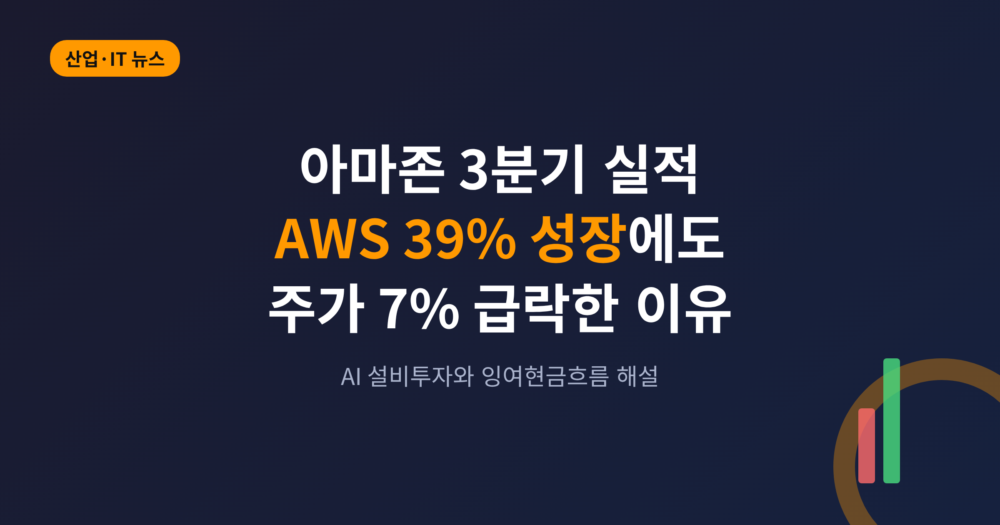
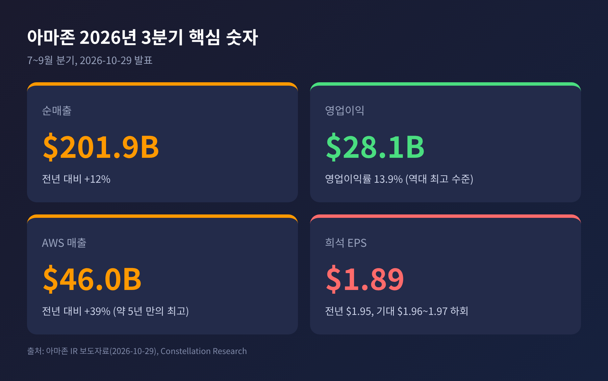
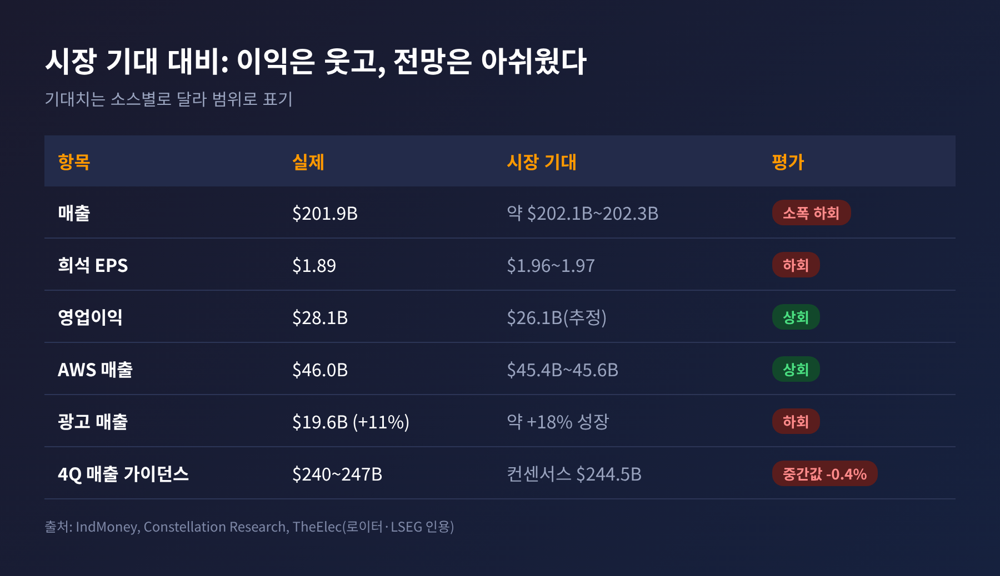
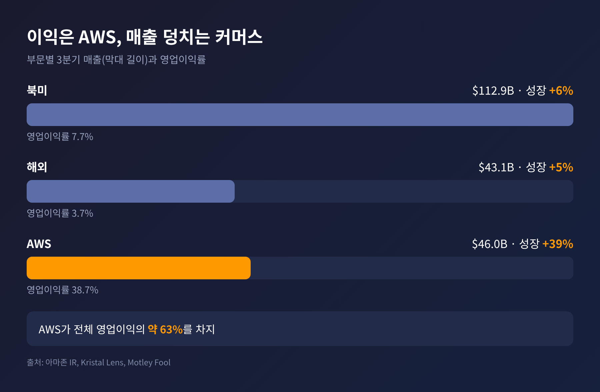
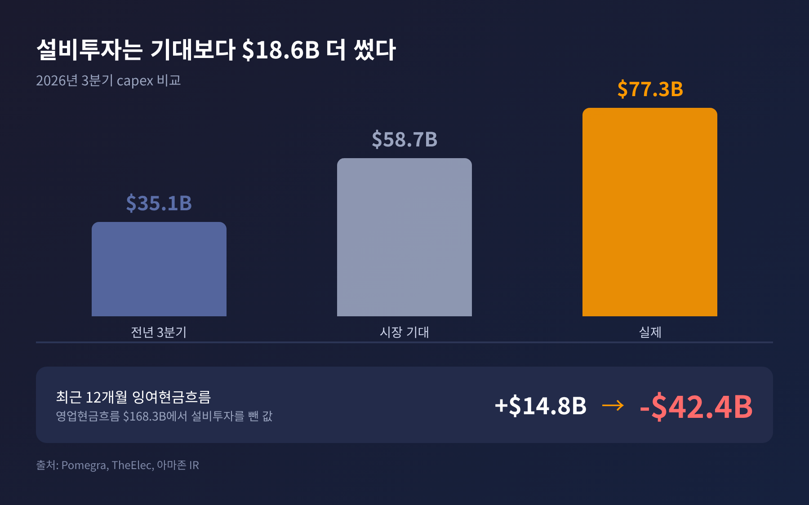
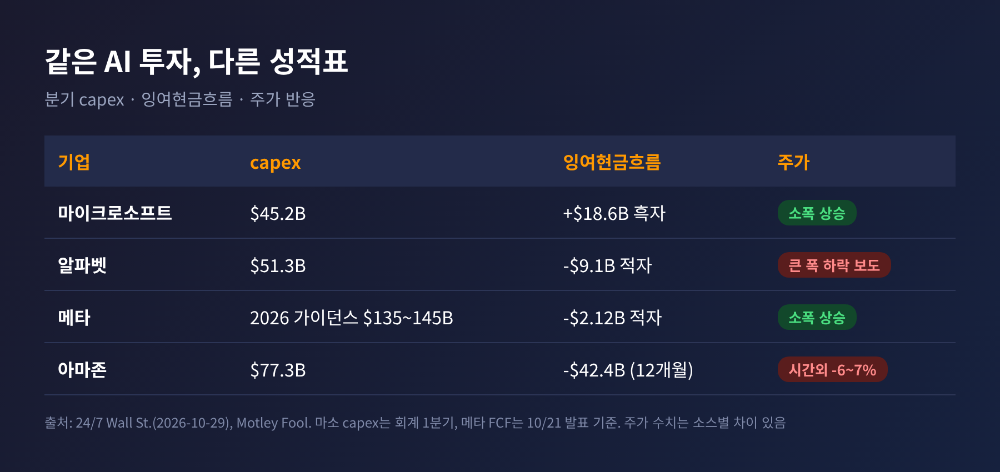
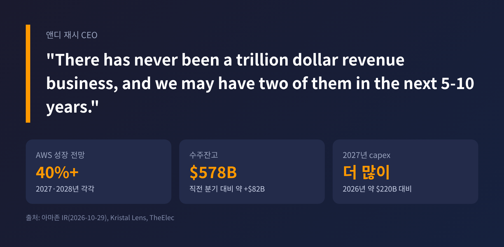

아마존이 10월 29일(미국 시간) 장 마감 후 2026년 3분기 실적을 내놓았습니다. 클라우드 사업 AWS는 약 5년 만에 가장 빠르게 성장했지만, 주가는 시간외 거래에서 6~7% 밀렸습니다. 이번 글에서는 숫자 자체보다 시장이 왜 그렇게 반응했는지를 정리해 보겠습니다.
3줄 요약
1. 매출 $201.9B(+12%)는 기대를 소폭 밑돌았고, 영업이익은 $28.1B로 기대를 웃돌았습니다.
2. AWS는 +39%로 재가속했지만, 분기 설비투자 $77.3B와 12개월 잉여현금흐름 -$42.4B가 발목을 잡았습니다.
3. 같은 날 시장은 현금이 남는 마이크로소프트에는 관대했고, 현금이 마이너스인 쪽에는 엄격했습니다.

숫자부터 보겠습니다. 달러 원문 기준입니다.
3분기 순매출은 $201.9B로 1년 전보다 12% 늘었습니다. 원화로는 1달러에 1,400원을 가정하면 약 283조원입니다. 환율에 따라 달라지는 값이므로 참고만 하시기 바랍니다.
영업이익은 $28.1B였습니다. 1년 전 $17.4B에서 크게 뛰었고, 영업이익률은 13.9%로 회사 역사상 가장 높은 수준으로 보도됐습니다. 반면 순이익은 $20.7B로 전년 $21.2B보다 줄었습니다. 주당순이익(EPS)은 $1.89였습니다.
이익이 늘었는데 순이익이 줄어든 이유는 비교 대상에 있습니다. 2025년 3분기에는 앤트로픽 투자에서 생긴 세전 평가이익 $9.5B가 들어 있었습니다. 올해는 그만한 일회성 이익이 없습니다. 영업이익만 놓고 보면 61% 증가한 셈입니다.
시장 기대와 비교하면 결과는 엇갈립니다. 매출은 기대치(약 $202.1B~$202.3B)를 0.1% 안팎으로 밑돌았고, EPS는 기대치($1.96~$1.97)보다 4% 정도 낮았습니다. 영업이익은 한 추정치($26.1B)보다 약 7.6% 높았습니다. 소스마다 기대치가 조금씩 달라 범위로 적었습니다.

주가는 정규장에서 4.25% 하락한 $243.79로 마감했습니다. 이 하락은 실적 발표 전에 이미 일어난 것입니다. 발표 후 시간외에서는 낙폭이 6~7%로 커졌습니다.
첫째는 돈의 흐름입니다. 3분기 설비투자(capex, 데이터센터·서버 같은 설비에 쓴 돈)는 $77.3B였습니다. 시장이 예상한 약 $58.7B를 크게 웃돌았고, 1년 전 $35.1B의 두 배가 넘습니다.
둘째는 가이던스, 곧 회사가 내놓은 다음 분기 전망입니다. 4분기 매출은 $240B~$247B로, 중간값이 로이터가 인용한 기대치 $244.5B보다 약 0.4% 낮았습니다. 크게 빗나간 수준은 아니지만, 성수기 분기라는 점에서 기대를 키울 만한 요소가 없었다는 평가가 나왔습니다.
셋째는 광고입니다. 광고 매출은 $19.6B로 11% 늘었습니다. 시장이 기대한 18% 안팎에는 못 미쳤고, 로이터는 7분기 만의 첫 부진이라고 보도했습니다. 아마존은 프라임데이가 올해 2분기로 옮겨 간 영향이라고 설명하며, 4분기에는 높은 10%대 성장을 회복하겠다고 밝혔습니다.
다만 정리해 둘 점이 있습니다. 프라임데이 이동 시점을 두고는 소스 사이에 상반된 서술이 있었습니다. 아마존 발표와 다수 매체는 2분기로 이동했다고 전했고, 한 매체만 반대로 적었습니다. 이 글은 아마존 발표를 따랐습니다.
좋은 소식부터 보겠습니다.
AWS 매출은 $46.0B로 39.3% 성장했습니다. 약 5년 만에 가장 빠르고, 직전 2분기의 37%보다 높습니다. 영업이익은 $17.8B로 1년 전 $11.4B에서 늘었고, 영업이익률은 약 38.7%입니다. 연환산 매출은 $184B에 이릅니다.
앞으로의 일감도 쌓이고 있습니다. 수주잔고는 $578B로, 한 분기 만에 약 $82B 늘었습니다. 경영진은 2027년, 2028년과 2029년 일부까지 가시성이 있다고 말했습니다. 앤디 재시 CEO는 AWS가 2027년과 2028년 모두 40% 이상 성장할 수 있다고 내다봤습니다.
반면 커머스는 차분합니다. 북미 매출은 $112.9B로 6%, 해외는 $43.1B로 5% 늘었습니다. 프라임데이 이동 효과가 없었다면 전체 성장률이 약 16%였을 것이라는 것이 아마존의 추정입니다. 영업이익률은 북미 7.7%, 해외 3.7%로, AWS의 38.7%와는 비교가 되지 않습니다.
그래서 이런 구도가 나옵니다. AWS 한 부문이 전체 영업이익의 약 63%를 만들어 냅니다. 아마존은 사실상 클라우드가 이익을 내고, 커머스가 그 위에서 성장을 받치는 회사가 됐습니다.
한계도 있습니다. AWS의 분기 순증 매출은 $3.75B로, 2분기의 $4.65B보다 줄었습니다. 또 AI 사업의 마진은 기존 AWS 서비스보다 낮아서, AI 비중이 커질수록 AWS 전체 마진을 깎을 수 있다는 지적이 있습니다.

이번 실적의 가장 무거운 숫자는 잉여현금흐름(FCF)입니다. 영업으로 번 현금에서 설비투자를 뺀 값입니다.
최근 12개월 영업현금흐름은 $168.3B로 29% 늘었습니다. 그런데 설비투자가 그보다 빠르게 늘면서 잉여현금흐름은 -$42.4B가 됐습니다. 1년 전에는 +$14.8B였습니다. 3분기 한 분기만 떼어 보면 약 -$33.5B로 계산됩니다.
부족한 돈은 빚으로 메우고 있습니다. 장기부채는 약 $173B로, 지난해 12월 이후 거의 3배가 됐습니다. 분기 이자비용도 $1.7B로 세 배 넘게 불었습니다.
올해 설비투자 계획은 약 $220B로 유지됐습니다. 문제는 내년입니다. 재시 CEO는 2027년 투자가 올해보다 "meaningfully more", 즉 의미 있게 많을 것이라고 했습니다. 구체적인 금액은 내놓지 않았습니다.
시장이 불안해하는 지점이 여기입니다. 수주잔고가 있으니 투자가 헛돈은 아닐 것입니다. 그러나 투자가 매출로 돌아오기까지 시차가 있고, 그동안 현금이 마이너스인 상태가 이어집니다.

아마존이 비용을 줄일 카드로 내세우는 것이 자체 AI 칩 트레이니움(Trainium)입니다.
경영진에 따르면 트레이니움과 CPU 칩 그래비톤의 매출 약정은 각각 1년 전보다 20배 넘게 늘었습니다. 자체 칩을 쓰는 고객은 3분기에 $2B 이상을 아꼈다고 합니다. 아마존의 AI 서비스 베드록에서 돌아가는 작업 대부분도 트레이니움 위에서 실행됩니다. 이 칩을 2027년 말부터는 AWS 밖에도 팔겠다는 계획까지 나왔습니다.
개발자 진입 장벽도 낮췄습니다. 오픈소스 도구 TorchNeuron으로 기존 PyTorch 코드를 다시 짜지 않고 트레이니움에서 돌릴 수 있습니다. 기존 개발 환경에서 갈아타는 부담을 줄이려는 시도입니다. 다만 트레이니움의 매출 절대 금액이나 칩 수량은 이번 소스에서 확인되지 않았습니다.
앤트로픽과의 관계는 이 흐름의 중심에 있습니다. 올해 4월 아마존은 앤트로픽에 $5B를 우선 투자하고 최대 $20B를 더 넣기로 했습니다. 이전 투자 $8B를 합치면 최대 $25B 안팎의 규모입니다. 앤트로픽은 향후 10년간 AWS에 $100B 이상을 쓰기로 약속했고, 최대 5GW 용량을 확보하며, 트레이니움2부터 4까지를 쓰기로 했습니다.
양날의 검입니다. 앤트로픽 투자는 지난해 3분기 순이익을 $9.5B 부풀렸고, 올해는 그 효과가 빠져 순이익이 줄었습니다. 반대로 앤트로픽은 AWS의 큰 고객이자 칩의 시험대입니다. 이번 3분기 실적에서 앤트로픽 몫이 얼마인지는 공개된 수치가 없습니다.
같은 주에 빅테크 실적이 줄줄이 나왔습니다. 숫자만 놓고 보면 모두 막대한 투자를 하고 있습니다. 그런데 주가 반응은 달랐습니다.
마이크로소프트는 매출 $92.3B(+19%), 애저(Azure) 성장률 48%로 기대(44%)를 넘었습니다. 설비투자 $45.2B를 쓰고도 잉여현금흐름이 +$18.6B로 흑자를 유지했고, 주가는 소폭 올랐습니다. 알파벳은 설비투자 $51.3B에 잉여현금흐름 -$9.1B였고, 회사채 발행과 주식 매각으로 돈을 조달하면서 주가가 크게 내렸다는 보도가 나왔습니다. 메타는 잉여현금흐름이 -$2.12B로 소폭 마이너스였지만 AI 투자를 주로 광고 수익으로 충당하는 구조이고, 주가는 소폭 올랐습니다.
아마존은 그 사이 어디쯤일까요. 성장은 마이크로소프트에 견줄 만큼 가속했습니다. 하지만 현금흐름은 알파벳 쪽에 가깝고, 규모(-$42.4B)는 더 큽니다. 이 비교는 제 해석입니다. 시장이 "성장 속도"보다 "그 성장을 누가 자기 돈으로 감당하는가"를 더 따지기 시작했다는 읽기입니다.
참고로 소스별로 주가 수치가 엇갈리는 부분이 있습니다. 한 기사는 알파벳이 약 11% 하락했다고 썼는데, 같은 기사의 시세 정보는 12.6% 하락으로 표시됐습니다. 아마존에 대해서도 오전 스냅샷은 -2%였으나 실제 종가는 -4.25%였습니다. 각 사의 세부 실적은 이미 다룬 글에서 정리했으므로 여기서는 비교에 필요한 부분만 인용했습니다.

전망은 세 가지 질문으로 압축됩니다.
첫째, AWS의 40% 성장이 현실이 되는가. 재시 CEO는 5년 안에 AWS 연매출 $1조 가능성까지 언급했습니다. 병목은 수요가 아니라 공급입니다. 데이터센터와 전력, 칩을 얼마나 빨리 늘리느냐가 관건이라고 경영진이 밝혔습니다.
둘째, 4분기에 광고가 회복되는가. 높은 10%대 성장을 약속했으니 연말 성적표가 첫 검증이 됩니다. 4분기 영업이익 가이던스는 $28.5B~$33.5B로, 1년 전 $25.0B보다 높습니다.
셋째, 2027년 투자 규모와 재무 구조입니다. 올해 $220B보다 더 쓴다고 했는데, 부채 $173B와 이자 부담이 함께 커집니다. 영업현금흐름이 설비투자를 따라잡는 시점이 언제인지가 주가를 가를 변수입니다.

정리하면 이렇습니다.
아마존의 3분기는 "잘했지만 비싸게 샀다"는 평가로 요약됩니다. 성장은 확실히 빨라졌고, 그 대가는 마이너스 현금흐름과 늘어난 빚입니다.
이번 실적이 던지는 질문은 하나입니다. 지금의 투자가 내일의 현금이 되어 돌아올 것인가.
AWS의 수주잔고가 그 답의 일부를 쥐고 있습니다. 나머지는 앞으로 몇 분기의 숫자가 말해 줄 것입니다.
이 글은 공개된 실적 자료를 정리한 해설이며, 특정 종목의 매수·매도를 권유하는 투자 권유가 아닙니다. 투자 판단과 그 책임은 투자자 본인에게 있습니다.
출처: 아마존 IR 보도자료(2026-10-29), Constellation Research, Motley Fool, TheElec, Pomegra, Kristal Lens, simpletechtrend, Marketing4eCommerce, IndMoney, 24/7 Wall St., SiliconANGLE